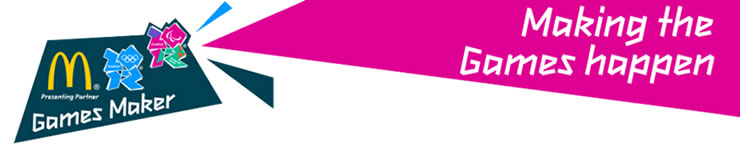

Games Maker Orientation

Games Maker Orientation training 18/02/2012
Dear Catherine Mudford,
We are looking forward to seeing you soon for Games Maker Orientation training at Wembley Arena!
Event - Wembley Arena Saturday 18th Feb 2012 Doors Open 08:30 AM Training will start 90 minutes after doors open Event Finishes Approx. 12:45
Seat - Entrance South East Block C4 Row 14 Seat 57
How do I get to Wembley Arena? - The full address is: Wembley Arena, Engineers Way, London, HA9 OAA, UK.
What do I do when I get there? - Go to the South East Entrance and have the barcode above ready to be scanned at the gate (either on a print out or on your phone).
What do I need to bring? - Please remember to bring photo ID - a passport or photocard driving licence - as you'll need them to get into the event! (If you're a UK resident you can bring a long-form birth certificate instead along with a recent proof of address - like a utility bill or bank statement dated within the last three months).
For security reasons you will not be able to store bags at the venue, so we recommend you travel as light as possible. There will be a 30-minute break during training and refreshments will be available to purchase inside the venue. Please bring cash as there are no cash machines at the venue and you won’t be able to pay by card.
Best wishes,
The London 2012 Games Maker team
 Outrider Outrider |
 Our House Our House |
 J J |
J |
C |
M |
M |
M |
L |